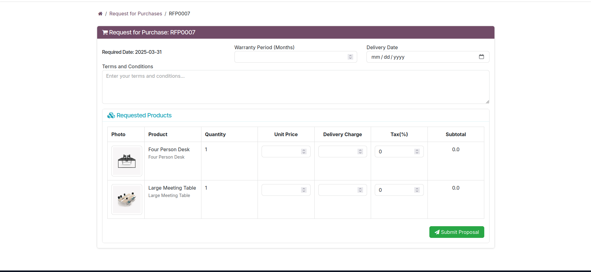

Vendor Bid
Streamline Procurement with Odoo 18’s Ultimate Vendor Management Solution
Get It on Odoo Apps StoreStreamline Procurement with Odoo 18’s Ultimate Vendor Management Solution
Get It on Odoo Apps StoreVendor Bid is a cutting-edge Odoo 18 module designed to revolutionize supply chain management. From secure email verification and supplier registration to RFP creation, quotation management, and advanced analytics, it empowers businesses with seamless, data-driven procurement workflows.
This is Input email page, Where supplier put his email. And an OTP will be sent to the mail.

This is the OTP page where user supplier input the OTP.

Supplier Registration Form part 1

Supplier Registration Form part 2

Supplier Registration Form part 3

Supplier Registration Form part 4

Supplier Registration Form part 5

In this page The user will see all the submitted Supplier Request

In this view Reviewer can see all the details of the requested supplier. And using the action button can approve, reject or Blacklist the Email.

In this view Approver can see all the approved supplier request by the Reviewer.

In this view Approver can see all the details of the approved requested supplier. And using the action button He can finalize the Supplier Request.

Reviewer Creating RFP

Requester Creating RFP, These are the users who are company employee who dont have the Full reviewer access. but sometimes need to request for product.

Here are the list of the requested RFP

Approver can see all the Requested RFP

Approver can Accept the RFP and publish it in the portal
Supplier can see all the published RFP in the portal.

Here the suppliers can Bid his price for the product.
Reviewer can see all the RFQ posted for the RFP. and can give a score and recommend the rfq for the next process. Also There is a system generated score which will help the reviewer to take a decision.

In this image Approver can accept the rfq for the rfp. Approver can only accept one Rfq for one RFP. Here only recommended RFQ will be shown here. If approver accepts then an automatic PO will be created for the products.

Accepted Purchase Order

Here user can see the report of specific supplier and can also download the excel sheet

HTML report of the supplier

Here supplier can edit their profile. They cant directly edit the profile. They will create an edit request with the edited information then wait for the approval.

This is Dashboard where You can select any supplier and a time range. Then u can see all the details of the suppliers in a graphical views.